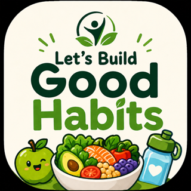
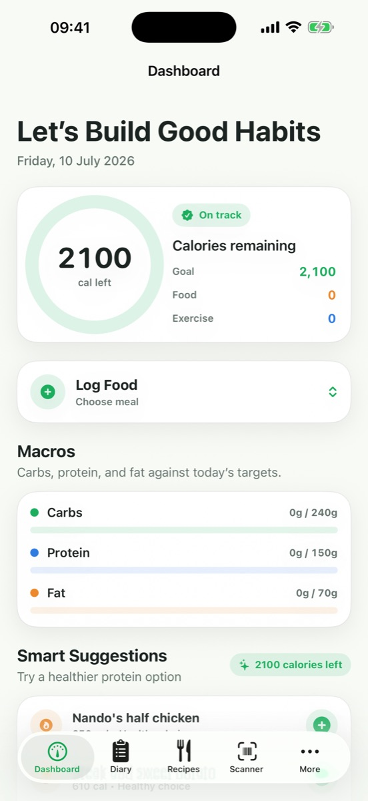
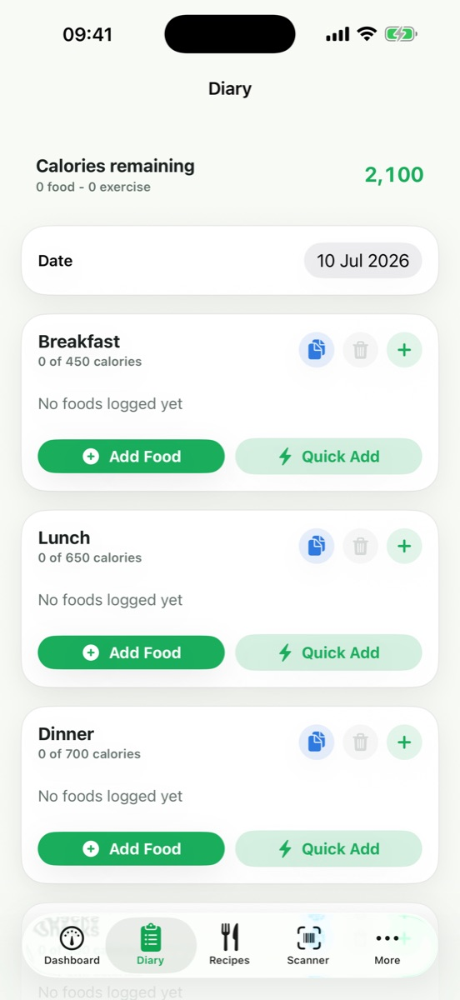

On TestFlightNutrition habits you can actually see.
Log meals and water, follow calories and macros, find recipe ideas, scan packaged-food barcodes and optionally connect Apple Health.


The current nutrition product—not the old habit concept.
These screens were generated directly from build 6 of the current app during this audit.
A full food-and-wellbeing toolkit.
Track meals, calories, macros and water with quick entry and recent-food shortcuts.
Search food through the apps.leary.cloud proxy backed by FatSecret, with a local cache.
Scan packaged foods and retrieve nutrition data from Open Food Facts when available.
Plan meals from ingredients, create shopping items and log a recipe into the diary.
See simple food ideas based on remaining calories and macros, plus local progress views.
With permission, read today’s steps and active energy and write logged nutrition and water when you choose.
Local by default, explicit when connected.
Diary, profile, shopping and cached search data are stored on the device using UserDefaults. Network and HealthKit features are used only for the functions described here.
A scanned barcode is sent for product lookup. The request does not need your diary or profile.
Your search term and GB region are sent to apps.leary.cloud, which relays the search to FatSecret.
Health access is permission-based and can be managed in iOS Settings.
Follow the Good Habits TestFlight.
The app is not presented as a public App Store release until a verified listing is available.